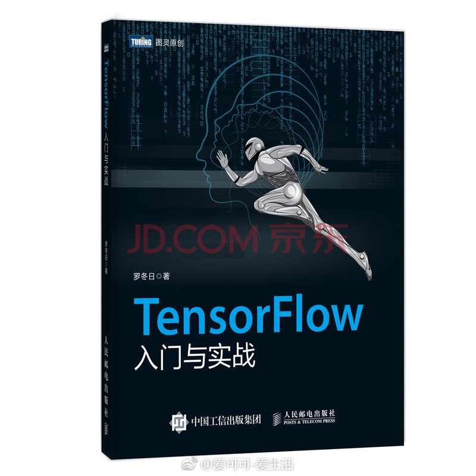

//@catbert:想看胭脂井的真人~//@屠龙的胭脂井://@爱可可-爱生活:明早九点五十放链接，不见不散！@爱可可-爱生活:#爱派茶馆·AI脱口秀# 之 “神「记」妙算” 本周六(3.10)上午10点，我们有幸请到了@屠龙的胭脂井 和 @西瓜大丸子汤 一起聊聊记忆与计算、记忆与学习的话题，任何观点和问题欢迎评论留言。 转发此条微博，有机会获得@图灵教育 《TensorFlow入门与实战》一本，截止2018.3.10 上午9:00 